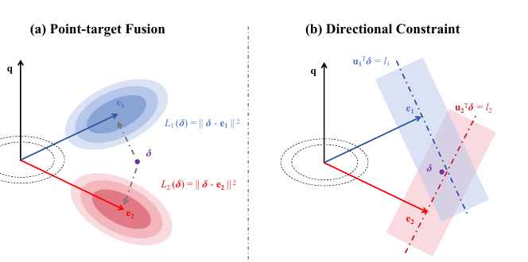
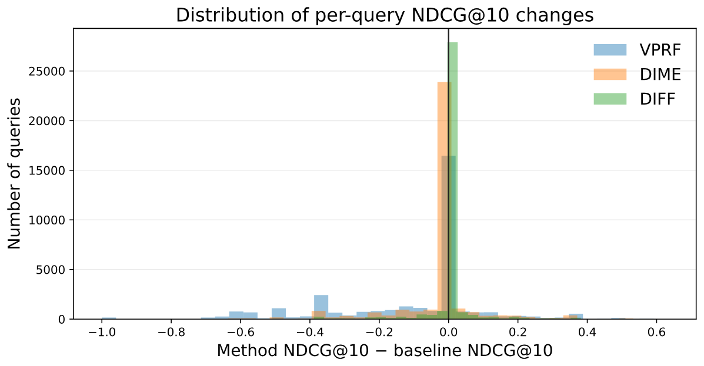

向量检索里，短查询常常表达不全。常见的补救办法是先拿到一些"反馈"文本，比如第一轮检索排在前面的文档，或者让大模型写一段假想答案（HyDE），再用它们修改查询向量。现有做法大多把反馈向量取平均，或者和原查询线性插值，相当于把每条反馈都当成"新查询应该长成的样子"，把查询往它整体拉过去。清华这篇论文提出的 DIFF（方向式后验反馈融合）认为这样会互相干扰：一条反馈往往只支持查询在某一个方向上的修正，其他方向它没给信息，却也被它往回拉。DIFF 先算出每条反馈相对原查询多出来的方向，只要求修正后的查询在这个方向上和反馈一致，其他方向不管；再按反馈质量给每条约束加权，并用"别离原查询太远"的约束兜底。整个过程有闭式解，不训练任何模型。在 BEIR 14 个子集、3 个检索模型、4 种反馈来源上，DIFF 的平均 NDCG@10 在 12 组设置里都是最高，但用第一轮检索文档做反馈时，它相对不加反馈的原查询基本没有提升；用大模型生成的反馈时，它领先最强基线 AnchorQE 的幅度又和超参数选择带来的波动差不多大。所以这篇论文更可靠的贡献是"不被噪声反馈拖垮"，而不是"显著提高检索效果"。

1. 问题：把反馈当目标点会丢掉互补信息
设原查询向量为 ，第 条反馈相对 提出的修正是 ，其中 是方向（单位向量）， 是幅度。逐点拟合的目标是让修正 接近 ，即最小化 。作者把它拆成两项：
第一项要求 在 方向上的分量等于 ，这是想要的。第二项惩罚 在所有其他方向上的分量，而这些方向可能正是别的反馈支持的修正。举个例子：查询是"苹果 发布会"，一条反馈文档讲新手机，另一条讲新电脑，逐点拟合会把查询拉到两者中间，两个方向都只走了一半。
作者在附录里证明：权重相同时，方向约束得到的修正幅度总是不小于逐点拟合，只有所有反馈方向共线时两者相等。反馈方向两两正交时差别最明显，方向约束下第 个方向的修正量是 ，逐点拟合下分母还要再加上其他所有反馈的权重之和，也就是被其他反馈稀释了。这个证明说明了方向约束"走得更远"，但走得远不等于走得对，后者要靠实验检验。
2. 方法：四步
第一步是算出每条反馈的新增方向。所有向量都做 L2 归一化，位于单位球面上。对反馈向量 ，先算它和查询的相似度 ，再减掉和查询平行的部分，得到 。 的方向 就是这条反馈想把查询往哪边转，长度 等于两者夹角的正弦值，衡量这条反馈带来了多少原查询里没有的东西。作者特意把"新增多少"（）和"是否可信"（由 决定）分开，避免把"和查询差得多"误当成"信息量大、值得信"。
第二步给每条反馈打可信度。可信度 由两层组成。单条质量 ：把同一查询下所有反馈的 用中位数和中位数绝对偏差标准化，再过 sigmoid，所以和查询更接近的反馈权重更大，而且不依赖不同模型相似度的绝对数值。整组可信度 ：先算所有修正向量的平均 ，记 为平均方向的强度， 为各条修正向量到 的距离平方的平均（离散程度），几何可信度 ， 是反馈条数，取值在 0 到 1 之间；反馈方向一致时 高，各说各话时 低，最后再乘上整组的平均单条质量，因为一组都很弱的反馈也可能彼此一致。
第三步联合求修正量，目标函数只保留每条反馈在自己方向上的约束，外加一项惩罚修正幅度：
这个问题有闭式解，只需要解一个 的线性方程组（ 是反馈条数，主实验取 5），计算量是 ， 是向量维度。
第四步把修正转回球面：最终旋转角度取 和" × 最大允许角度 "中较小的一个，然后 。整组反馈不可信时 小，查询几乎不动。
3. 实验
设置：BEIR 的 14 个子集（包括论辩检索 ArguAna、事实核查 FEVER（事实抽取与核验）、多跳问答 HotpotQA、MSMARCO、谷歌搜索问答 NQ（自然问题集）、科学论断核查 SciFact、新冠文献检索 TREC-COVID 等），三个检索模型 bge-base-en-v1.5、e5-base-v2、Qwen3-Embedding-0.6B。反馈有两类：第一轮检索的前 篇文档（PRF），以及 Qwen3.8-27B 生成的三种文本（HyDE 假想文档、Q2D 查询扩写、CoT 推理过程）。所有方法共用同一个编码器、同一份反馈和同一个索引，只比较融合方式。对比方法包括向量平均（VPRF）、拼接后重新编码（Concat-P/L）、只取正交分量的 OR-PRF、按维度加权的 DIME（逐维挑选重要维度）和它的改进版 Eclipse，以及需要额外检索来估权重的 AnchorQE。
3.1 主结果
下表是 14 个子集的平均 NDCG@10，括号里是不用反馈的原查询分数：
| 检索模型（原查询） | 反馈 | VPRF | OR-PRF | AnchorQE | DIFF |
|---|---|---|---|---|---|
| BGE（0.5492） | PRF | 0.5045 | 0.5392 | 0.5466 | 0.5522 |
| HyDE | 0.5410 | 0.5606 | 0.5700 | 0.5717 | |
| Q2D | 0.5564 | 0.5632 | 0.5698 | 0.5723 | |
| E5（0.5231） | PRF | 0.4775 | 0.5103 | 0.5225 | 0.5252 |
| HyDE | 0.5088 | 0.5189 | 0.5487 | 0.5489 | |
| Qwen（0.5492） | PRF | 0.5066 | 0.5388 | 0.5459 | 0.5491 |
| HyDE | 0.5607 | 0.5702 | 0.5720 | 0.5777 |
主表里有两点值得注意。第一，用检索文档做反馈时，简单平均会把分数拉到原查询以下，BGE 上从 0.5492 掉到 0.5045；DIFF 在这一栏只是没掉分。论文的显著性标记也印证了这一点：E5 和 Qwen 上 DIFF 相对原查询的变化不显著，只有 BGE 上的 +0.003 被标为显著。第二，用大模型生成的反馈时各方法都有提升，DIFF 和 AnchorQE 很接近，E5 + HyDE 上只差 0.0002，CoT 反馈下 BGE 上差 0.0004，这两格论文也没有标出显著差异。AnchorQE 要额外做检索来估权重，DIFF 不需要，这是 DIFF 在效果持平时的实际优势。
3.2 平均分下面的逐查询变化

这张图解释了 PRF 下平均分为什么几乎不动。VPRF 让大量查询明显变差，有一批查询掉了 0.4 到 0.6。DIFF 让绝大多数查询基本不变，变好和变差的数量差不多。原因是检索回来的文档方向分散，整组可信度 很低，第四步把旋转角度压得很小。换句话说，DIFF 在噪声反馈下的做法接近于"不动"，这是稳健，但也意味着它没能从检索文档里挑出有用的那几条。作者说在 HyDE 反馈下，DIFF 变好的查询明显多于变差的，同时仍有大量查询保持不变。
3.3 分子集看：收益集中在少数数据集
附录给了 BGE 上每个子集的结果。下表选了变化最明显的几个：
| 子集 | 原查询 | DIFF（PRF） | DIFF（HyDE） | AnchorQE（HyDE） |
|---|---|---|---|---|
| NQ | 0.5411 | 0.5451 | 0.5962 | 0.5872 |
| TREC-COVID | 0.7802 | 0.8012 | 0.8480 | 0.8401 |
| DBPedia | 0.4078 | 0.4104 | 0.4429 | 0.4424 |
| FEVER | 0.8630 | 0.8541 | 0.8695 | 0.8723 |
| Touche2020 | 0.2571 | 0.2473 | 0.2646 | 0.2580 |
| Quora | 0.8874 | 0.8834 | 0.8832 | 0.8870 |
| ArguAna | 0.4534 | 0.4673 | 0.4550 | 0.4592 |
PRF 下 DIFF 在 10 个子集上略升、4 个子集上略降，升幅最大的是 TREC-COVID 的 0.021，降幅最大的是 Touche2020 的 0.010，所以平均下来几乎不变。HyDE 下的提升主要来自 NQ、TREC-COVID、DBPedia 这类问答和实体检索任务，因为大模型写出的假想答案和目标文档的文体接近。Quora 是找重复问题，假想答案和目标的文体不一致，DIFF 反而略低于原查询。按子集比较，HyDE 下 DIFF 在 10 个子集上高于 AnchorQE，在 4 个子集上低于它。
3.4 消融
在 BGE 上每次去掉或替换一个部件：
| 变体 | PRF NDCG@10 | HyDE NDCG@10 |
|---|---|---|
| DIFF 完整 | 0.5522 | 0.5717 |
| 改回逐点拟合（直接加权求和修正向量） | 0.5439 | 0.5646 |
| 去掉全部可信度（τ=1） | 0.5454 | 0.5703 |
| 去掉单条质量（a=1） | 0.5462 | 0.5481 |
| 单条质量不做中位数标准化 | 0.5487 | 0.5684 |
| 去掉整组可信度（g=1） | 0.5483 | 0.5565 |
改回逐点拟合是降幅最大的几项之一，支持论文的核心论点。不过在 PRF 下，表中各变体都低于原查询的 0.5492，只有完整的 DIFF 高出 0.003，也就是说各部件的作用主要是把损失降到零，而不是带来收益。HyDE 下去掉单条质量从 0.5717 掉到 0.5481，说明生成的假想文档质量参差，必须区别对待。
3.5 超参数和效率
DIFF 有两个超参数：拉回原查询的强度 和最大旋转角 ，作者在 3×3 的网格里搜索。PRF 下 9 组结果在 0.5452 到 0.5522 之间，只有 5 组高于原查询，最佳设置是很小的旋转角 π/12，这再次说明检索反馈下最好的策略是少动。HyDE 下 9 组在 0.5631 到 0.5717 之间，只有 2 组超过 AnchorQE 的 0.5700。论文没有说明网格搜索用的是哪部分数据，如果是直接在测试集上选，那么 DIFF 对 AnchorQE 的领先在这个波动范围之内。
效率方面，在 10 个查询上计时，DIFF 耗时 0.258 秒，和向量平均的 0.247 秒相当，AnchorQE 因为要额外检索，耗时是 DIFF 的 3.67 倍。不过 10 个查询的样本很小，只能看出数量级。
4. 局限
最主要的一点在主表和分布图里：用第一轮检索文档做反馈时，DIFF 相对原查询几乎没有收益，它的价值是"不被噪声拖垮"。其次，用生成反馈时对 AnchorQE 的领先很小，又可能受超参数选择影响，论文没有报告多次运行的方差。此外，实验只在 BEIR 上做，检索模型最大 0.6B，没有在生产规模的语料和更大的向量模型上验证。生成反馈也只用了一个大模型。
5. 实践意义
如果系统里已经在用 HyDE 或查询扩写，并把生成文本编码后和原查询取平均，可以考虑换成 DIFF：只依赖向量本身，不训练、不额外检索，每个查询多解一个 5×5 的线性方程组，就能在不增加检索次数的情况下拿到和 AnchorQE 相当的效果。上线前应按自己的查询类型分开评估，因为像 Quora 这样"找相似问题"的任务，假想答案本身就和目标不对路。如果反馈来自第一轮检索结果，这篇的结果提示收益有限，DIFF 可以作为"防止平均做法把指标拉低"的保险，而不要指望它带来提升。
讨论
欢迎补充实验细节、复现经验或不同看法。需 GitHub 登录。
正在加载讨论…